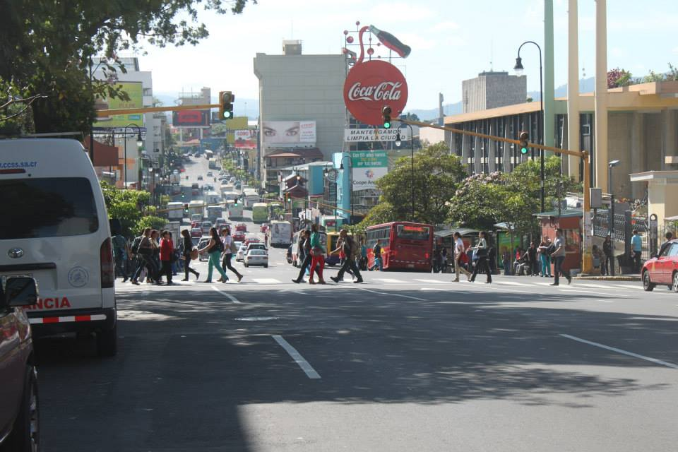
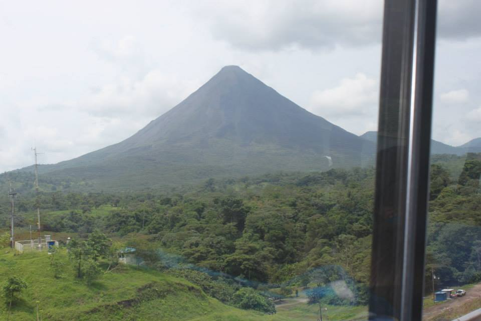
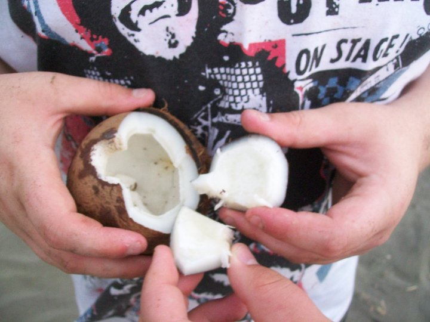

We started off the vacation by flying from Miami, Florida to San Jose, Costa Rica, which is the capital city. We stayed there for 3 days. While in the city, we swent to several different shopping centers that were all very different from the ones in the US. We ate at all authentic Costa Rican restaurants. We also went on a bus tour of the city.

Next, we went to the Arenal volcano in the Arenal region. We stayed in a hotel just a few miles from the volcano. We were so close that we could see lava flow at night. We also went kayaking in the lake at the base of the volcano. The lake used to be a valley and small town, but it was later turned into a lake. It was a weird feeling kayaking over what used to be a town.
<
The last part of our stay in Costa Rica was in Jaco, which is a very popular beach town. We stayed right outside of town in a small hotel at the end of a gravel road. We were right on the beach. There were lots of monkeys, but it turns out that monkeys in beach towns are mean and will steal your stuff or actually attack you. While we were in Jaco there was a tropical storm and an earthquake. So, this portion of the trip was definitely the most eventful.